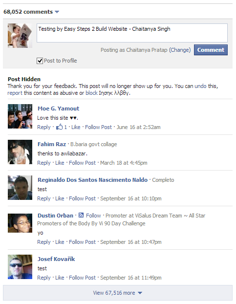
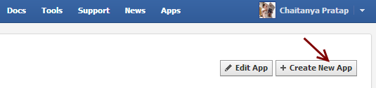
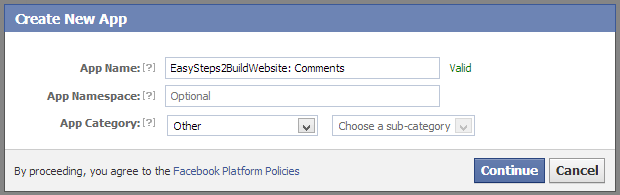
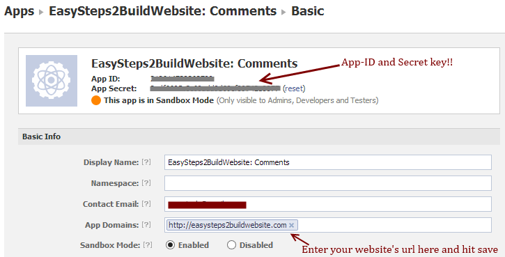

Facebook has provided several features for social sharing. We already shared few tutorials for WordPress users, such as adding Facebook like button and open graph meta tags for WordPress. In this post, we shared a step by step guide to add Facebook comments in WordPress.
Related Post: Google+ comments for WordPress
Why you should use Facebook comments in WordPress?
- Most of the people have a Facebook account so using it will increase the number of comments on your blog.
- Improved Social sharing – Content would be shared frequently on the Facebook.
- Can build up a good community over Facebook which can later become a good source of traffic.
Before we proceed with the process of adding it to a blog, let’s see how Facebook Comments it looks like on a blog.

How to Add Facebook Comments to WordPress blog
There are two ways of doing it –
1) Using WordPress plugins – There are two popular WP plugins which does this task for you. They just require Facebook App ID, the step by step process of creating App ID is shared below.
2) Facebook comments for WordPress without plugin – Some folks prefer to do the things on their own, for theme I have shared the code and scripts, which can be added directly to your theme’s template in order to have the Facebook comments on your blog.
1) Using WordPress plugins
Here are the plugins which can add Facebook Comments into your WordPress blog.
- Facebook comments plugin by Alex
- Facebook comments for WordPress
Facebook Comments plugin by Alex
Step 1: Download the plugin from WordPress page: http://wordpress.org/plugins/facebook-comments-plugin/, install and Activate it on your blog.
Step 2: Once you are done with step 1, go to WordPress » Settings » Facebook Comments and configure all the settings properly. This step would require a Facebook APP ID for activation.
How to create Facebook APP ID for Comments?
a) Go to Facebook Developers page and click “Create New App”

b) A screen will pop up where you need to enter the App Name, App category and sub-category. Click Continue and enter the required captcha and hit continue.

c) You would get a screen like the below one. Note down the App ID as shown below, this is the one which you would be needing for activating plugin to display Facebook comments for WordPress. Enter your site’s url in the App Domains field and save the changes. That’s it you are done with creating new App ID.

Step 3: Enter the FB App Id in the plugin’s setting page and save the settings. By the time, the Facebook comments should be displayed on your blog. If you see any issues then use Facebook Debugger to fix the issues. In the above screenshot, the Sandbox mode is enabled, however you may wish to disable it, in order to display the comments for all the users.
Comment Moderation Tool
Comment will be waiting in the moderation queue until unless you approve them. In order to moderate the comments visit the Facebook comment moderation tool. This is quite an advantage of having Facebook comment on your blog rather than Google+ comments as G+ comments doesn’t wait for the moderation, which ends up in a big headache of monitoring all the comments on daily basis. Hopefully, soon there would be a solution for Google+ comments moderation too.
Manual placement of Comments
» Below code can be placed in your theme’s template to have a desired placement of Comment box.
echo do_shortcode('[fbcomments]');
» The below code can be used while writing a post/page.
[fbcomments]
» If you wish to stop comments from being displayed on certain post ids, such as: 222, 20, 447, 77 then use the below short code to remove comment box from them. For any other assistance you can visit author’s page: Facebook Comments WordPress Plugin
if (!is_single(array(222,20,447,77))) {echo do_shortcode('[fbcomments]');
Facebook comments for WordPress
Note: This plugin has not been update from a very long time so I would suggest you to go with the above plugin. But still, if the above plugin is not compatible with your theme or creating a conflict with other plugin or there is any other issue with it then you can very well try this one. Steps are as follows –
Step 1: Download the plugin from WordPress page: Facebook comments for WordPress , upload, install and activate it similar to the above plugin.
Step 2: In the settings page enter the Facebook App ID and secret key(Steps for creating of Facebook App ID and Secret key are shared above) and save settings.
That’s it!! The plugin should be working now on your blog.
2) Facebook comments for WordPress without plugin
Step 1: Add the below code in your theme’s files right after the opening of <Body> tag. You can have it in the single.php file for displaying the comment box on every single post.
<div id="fb-root"></div>
<script>(function(d, s, id) {
var js, fjs = d.getElementsByTagName(s)[0];
if (d.getElementById(id)) return;
js = d.createElement(s); js.id = id;
js.src = "//connect.facebook.net/en_US/all.js#xfbml=1&appId=FB-APP-ID";
fjs.parentNode.insertBefore(js, fjs); }
(document, 'script', 'facebook-jssdk'));
</script>
Replace the App ID in the above code
appId=FB-APP-ID
with your App Id (Steps are shared above for creating the new App ID)
Step 2: Place the below code where you want to display the comment box. Adjust the width as per the need. You would prefer to include it in comments.php file of your theme.
<div class="fb-comments" data-href="<?php the_permalink() ?>" data-width="470" > </div>
Step 3: Add the below piece of code in the header section of your entire website (within <head> … </head> tags) by including it in the header.php file of your blog. Replace the FB-APP-ID with the actual ID in the below code.
<meta property="fb:app_id" content="FB-APP-ID"/>
Reference: Comment Box – Facebook Developers
Conclusion
Adding Facebook comments to your WordPress blog is easy and hardly takes few minutes to set it up. If you have a good fan following on Facebook then having it on your blog can be good in terms of traffic and social sharing. Let me know if you face any issues while setting it up or in case of any questions. Do, let us know which comment box do you prefer: Google+ comments or Facebook comments.
Leave a Reply